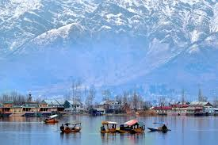
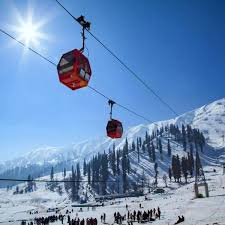
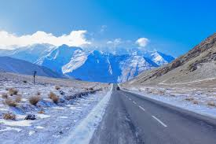
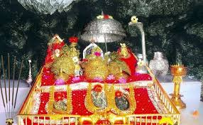

Jammu & Kashmir
Srinagar

Srinagar, the summer capital of J&K, is famous for Dal Lake, houseboats, Shankaracharya Temple, and Mughal gardens.
- ⏰ Best Time: April – October
- 💰 Budget: ₹6,000 – ₹10,000 (3 days)
- 👨💼 Guide: Available for sightseeing
- 🌤️ Weather: Pleasant, 15°C – 30°C
- 📍 Location: Kashmir Valley, India
Gulmarg

Gulmarg is known as the "Meadow of Flowers," famous for skiing, Gondola rides, and snow-capped mountains.
- ⏰ Best Time: December – March (snow), April – June (summer beauty)
- 💰 Budget: ₹7,000 – ₹12,000 (3–4 days)
- 👨💼 Guide: Recommended for skiing & trekking
- 🌤️ Weather: Cold, -5°C – 20°C
- 📍 Location: Baramulla District, Jammu & Kashmir
Pahalgam

Pahalgam, a scenic town, is popular for trekking, fishing, and the starting point of the Amarnath Yatra.
- ⏰ Best Time: April – October
- 💰 Budget: ₹6,000 – ₹9,000 (3 days)
- 👨💼 Guide: Optional
- 🌤️ Weather: Pleasant, 11°C – 25°C
- 📍 Location: Anantnag District, Jammu & Kashmir
Leh-Ladakh

Leh-Ladakh is famous for Pangong Lake, monasteries, Nubra Valley, Khardung La Pass, and adventure biking routes.
- ⏰ Best Time: May – September
- 💰 Budget: ₹10,000 – ₹20,000 (5–6 days)
- 👨💼 Guide: Required for treks & bike tours
- 🌤️ Weather: Cold desert, -5°C – 25°C
- 📍 Location: Union Territory of Ladakh (formerly J&K)
Vaishno Devi

Vaishno Devi is one of India’s holiest pilgrimage sites, located in the Trikuta Mountains, attracting millions of devotees.
- ⏰ Best Time: March – October
- 💰 Budget: ₹4,000 – ₹7,000 (2 days)
- 👨💼 Guide: Not required
- 🌤️ Weather: Moderate, 10°C – 30°C
- 📍 Location: Katra, Jammu region, J&K